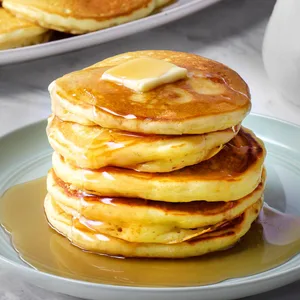

Welcome to my pancakes recipes page

Description
This pancakes recipe is a classic breakfast dish made with simple ingredients. Fluffy and delicious, these
pancakes are perfect with maple syrup, fresh fruit, or whipped cream.
Ingredients
- 1 cup all-purpose flour
- 2 tablespoons sugar
- 1 tablespoon baking powder
- 1/2 teaspoon salt
- 1 cup milk
- 1 large egg
- 2 tablespoons melted butter
- 1 teaspoon vanilla extract
Steps
- In a large bowl, whisk together the flour, sugar, baking powder, and salt.
- In another bowl, mix the milk, egg, melted butter, and vanilla extract.
- Pour the wet ingredients into the dry ingredients and stir until just combined. Do not overmix; a few lumps
are okay.
- Heat a non-stick skillet or griddle over medium heat and lightly grease it.
- Pour 1/4 cup of batter onto the skillet for each pancake.
- Cook until bubbles form on the surface, then flip and cook until golden brown on the other side.
- Serve warm with your favorite toppings.
Back to home